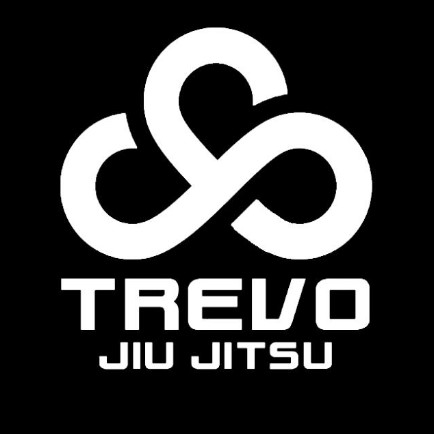

<!DOCTYPE html>
<html lang="pt-br">
<head>
	<meta charset="UTF-8"/>
 <title> TREVO JJ </title>
 <link rel="stylesheet"  href="_css/estilo.css"/>
</head>
<body>
<div id="interface">
<section id="corpo">
<aside id="lateral">
	<header id="cabecalho">

<nav id='menu'>
<h1>Menu Principal</h1>
<ul type="circle">
<li><a href="index.html.html">Home</a></li>
<li><a hre="agenda.html">Agendas</a></li>
<li>Campeonatos</li>
<li><a href="https://www.instagram.com/direct/inbox/" target="_blank">Fale conosco</a></li>
<li><a href="Professores.html">Professores</a></li>

</ul>
</nav>
</header>
<figure class="foto-leg"><a href="https://www.instagram.com/trevojiujitsu/" target="_blank">
<br></a>
<figcaption> 

	<h3> Trevo Jiu Jitsu</h3>
	<p>O melhor Lugar para aprender Jiu Jitsu</p>
	</figcaption>

</figure>
<figure class="foto-legrpm">
<a href="https://www.instagram.com/rpmjiujitsu/"target="_blank"></a><br>
<figcaption> 
	<h3> RPM </h3>
	<p>Ruam Pepe o brabo!</p>
	</figcaption>
</figure>

<figure class="foto-legimbjj"><a href="https://www.instagram.com/moreirairmaos/"target="_blank">
<br><a>
<figcaption> 
	<h3> Irmaos Moreira</h3>
	<p> André e Luciano Moreira!</p>
	</figcaption>
</figure>
	<figure class="foto-legjonas">
<a href="https://www.instagram.com/jmbjjclub/"target="_blank"><br></a>
<figcaption> 
	<h3> Jonas Marins Jiu Jitsu Club </h3>
	<p>Professor sinistro Jonas Marins!</p>
	</figcaption>

</figure>
<hgroup>
<h3>Treinos > &nbsp; &nbsp; &nbsp; &nbsp; Técnologias</h3>

<h1>Saiba tudo sobre o BJJ raiz</h1>
<br>
</hgroup>
<hgroup>
	<h2>Jiu Jitsu Profissional</h2>
	<h2>Jiu Jitsu Levado à Sério</h2>
</hgroup>

<h2> O que é o BJJ que você aprenderá na <i><a href="https://www.instagram.com/trevojiujitsu" target="_blank"/>TrevoJiuJitsu</i></a></h2><aside id="lateral">
	<p> <em>Jiu-jítsu brasileiro </em>(em japonês: ブラジリアン柔術, Burajirian jūjutsu) ou BJJ (Do inglês, Brazilian Jiu-<wbr/>Jitsu) é uma arte marcial[3] e esporte de combate, desenvolvido pela família Gracie, no início do século XX, que se tornou a forma mais difundida e praticada do "Jiu-<wbr/>jitsu" (após o Judô) no mundo, principalmente depois das primeiras edições dos torneios de Vale Tudo e Artes marciais mistas (MMA), principalmente no UFC, nos idos da década de 1990 e no Pride FC durante o final da década de 1990 e começo da década de 2000.[4]</p>
<br>
<h2> Tipo de Arte Marcial</h2>
<p>É uma arte marcial de luta agarrada, onde o objetivo é imobilizar o oponente no chão por meio de uma "finalização", colocando o oponente em uma torção de um membro do corpo (como por exemplo uma chave de braço ou chave de perna) ou estrangulamento (como o mata-leão ou triângulo), forçando o oponente a desistir. O Jiu-<wbr/>Jitsu brasileiro tem um apreço em focar na luta de solo onde a luta em pé tem papel secundário, ao contrário de outras marciais de luta agarrada.[5]</p>
<br>
<h2>Definindo o Jiu Jitsu</h2>
</p>Apesar do nome da modalidade ser "jiu-<wbr/>jitsu", na verdade, a modalidade não se aplica como o tradicional Ju-jutsu, foi desenvolvida como especialização e ênfase das técnicas de controle e luta no chão, ne waza e katame waza, e com menos ênfase às técnicas de luta executadas de pé, tate waza, das técnicas de judô, de Mitsuyo Maeda, representante direto do Instituto Kodokan.[6][7] Por não serem o foco principal da modalidade, os golpes de ate waza e kansetsu waza, acabam tendo papel coadjuvante e/ou intermédio para a execução de um golpe final de submissão do adversário.[8] O nome do estilo de luta da família Gracie permaneceu como jujutsu, porque na época em que os irmãos Carlos e Hélio Gracie, principalmente, finalizaram seu repertório, o nome "judô" ainda não era de uso comum mas Kodokan jujutsu.[9]</p>
<br>
<h2> Surgimento de um Novo estilo</h2>
<p>O criador do estilo foi, em princípio, Carlos Gracie, que adaptou o Judô com especial apreço à luta de solo, haja vista que seu porte físico punha-lhe em severa desvantagem contra adversários de maior porte. Partindo do princípio de que numa luta de solo, quando projeções ou mesmo chutes e socos não são eficientes, mas alavancas, sim, o porte físico dos contendores torna-se de menor importância. Nessa situação, aquele que tiver mais técnica possuirá consequentemente a vantagem.[10]</p>
<br>
<h2> Arvore do Ju Jutsu</h2>
<p>Se não foram originais em adaptar uma arte marcial provecta, haja vista que no Japão isso já há muito ocorrera com o aiquidô e o próprio judô, oriundos do Ju-jutsu, com o caratê, oriundo do te-jutsu de Okinawa, ou mesmo no resto do mundo como o krav maga (Israel) ou a capoeira regional (Brasil), Carlos Gracie e depois Hélio Gracie foram originais em criar um paradigma que prima pela efetividade. Comprovado o seu sucesso em competições, o Jiu-<wbr/>jitsu brasileiro serviu de cerne do que viria a ser a modalidade artes marciais mistas.[4]</p>
</aside>
</section>
<footer id="rodape">
<h3>&copy;Atualizado em 22/02/2023 Por <a href='https://www.instagram.com/bygcolt' target='_blank'/>André Lucas</a></h3>
</footer>
</div>
</body>
</html>